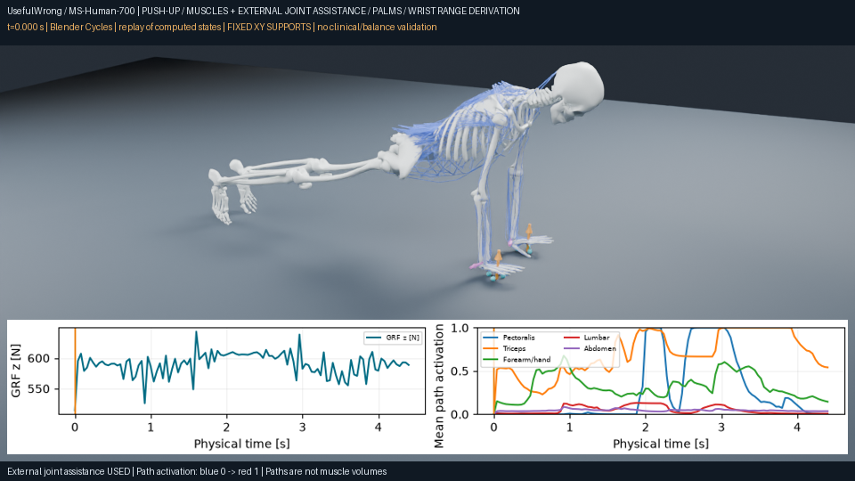
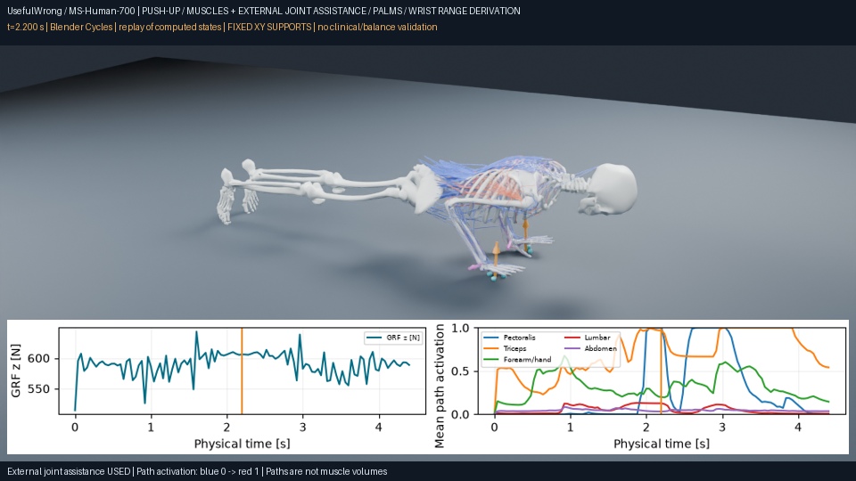
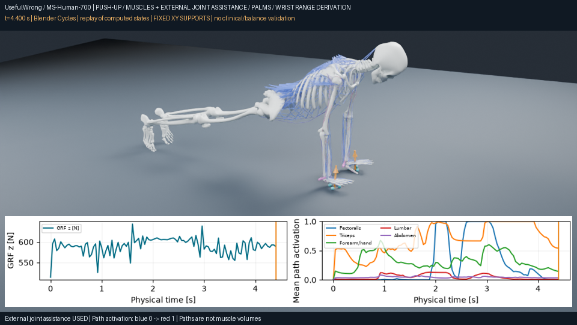

A computed palm push-up
One model, saved states, inspectable numerical evidence.
External joint assistance is used. Muscle recruitment, ideal horizontal sticking supports and a declared wrist-range derivative. No human or clinical validation.
Three recorded phases



Read the result in context
Chest excursion 27.865 cm; maximum support-point displacement 0.0946 mm. External joint work 578.014 J. These are simulated values, with numerical acceptance gates.
51 saved-state frames at 12 FPS; the 4.25 s video clock differs from physical time. Activation colors and plots come from calculated actuator states. Paths are not muscle volumes or EMG. Fingers are rigid, contacts are proxies and discrete wrist ligaments are absent.
Inspect bilateral pectoral traces · All gates and metrics · Scientific scope · Licenses

MuJoCo 3.17.0 / Blender 4.5.15 Cycles CPU
Run 9ed1e5d7-40b9-4d4c-96f8-8fcc98e6ac1b